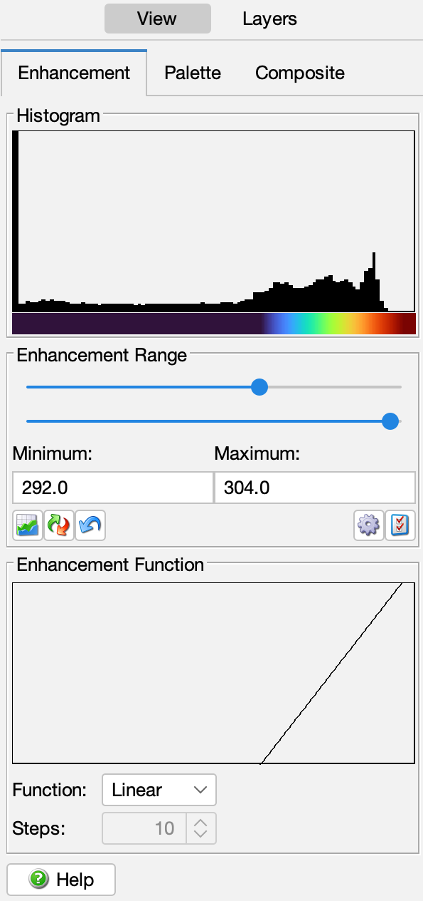
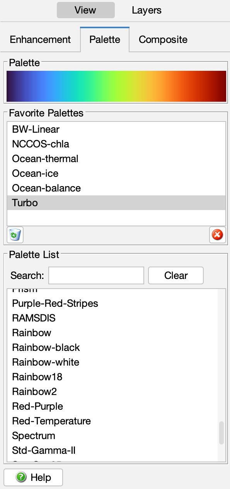

In this section:
CDAT uses color enhancement to convert data values into colors for display. A color enhancement is specified by the enhancement range (minimum and maximum), function (linear, step, log), and palette (black-to-white, blue-to-red, etc.). Each variable in the data view has its own color enhancement so that you can toggle between variables and keep the appropriate enhancement for each variable. For example, visible albedo data normally uses a a black (dark) to white (light) palette, while temperature data uses a blue (cold) to red (hot) palette and different enhancement range. The color enhancement control tabs are shown here (enhancement tab on the left, palette tab on the right):
|  |  |
You can modify the color enhancement range and function using the enhancement controls. The enhancement tab shows a histogram of the data values with the current palette mapping, and allows you to change the minimum and maximum data value in the range by means of sliders and text fields. Click and drag the sliders, or change the text field values and hit to accept the new values. The buttons below the text fields are useful to quickly change or reconfigure the enhancement:
You can select and modify the enhancement function using the function controls. The function shape is shown as an XY curve plot, and the palette mapping under the data histogram changes according to the function.
You can change the color enhancement palette using the palette controls. The palette tab shows the currently selected palette with a list of available palettes. Click a new palette name from the list to change the palette. You can search for palette names and save your favourite palettes by dragging them into the favourites list. You can also use your own custom palettes; see the preferences and resources section for details.